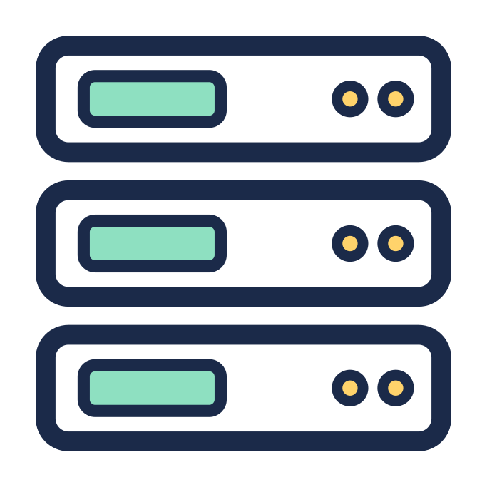

Complete IT recycling & secure data destruction services
We recycle all types of waste electronic and IT equipment, including laptops, servers, mobiles and specialist devices such as those that are used in education, scientific and healthcare settings.
We make IT asset disposal easy, secure, and eco-friendly.
Book a collectionFree collections when you recycle at least 10 laptops, PCs & servers (any combination). It's also free to recycle almost all waste IT with us.
Computer recycling
Everything from old desktop PCs, Apple Macs & all legacy computer systems.
Hard drive & media destruction
Expert hard drive & SSD destruction services. We also securely destroy data found on a wide range of digital and electronic media.
Laptop recycling
We collect all types of laptops for recycling, from all brands. Including ultra-portables, rugged, MacBooks, Chromebooks etc.
Mobile device recycling
We collect and recycle all types of mobile devices, including phones, tablets, EPOS hardware, etc.
Monitor & screen recycling
We offer nationwide collection and recycling of all your computer monitors, display & advertising screens.

Server recycling
We collect servers and all types of network IT hardware, including network switches, SAN arrays, gateways & interfaces.
It's easy to recycle e-waste with us
- We collect for free if you have at least 10 laptops, PCs & servers to recycle (any combination of these).
- Secure data destruction, fully certificated and WEEE & GDPR compliant
- We are 100% carbon negative, and leaders in the UK's circular economy
Book a collection
We collect IT waste from your premises at a convenient time. Fully secure, tracked and certified. Free when there's 10 or more qualifying items.
→ Collect from my business → Collect from my homeSaving Bin
A secure on-site bin for recycling IT waste. You pay for the initial cost of the bin, and the recycling is free when there's at least 10 qualifying items inside.
→ Order a new Saving Bin → Empty my Saving BinSaving Post
Recycle with our free and secure postal service, Saving Post. We'll send you a shipping label, you package your items then give them to our trusted courier.
→ IT recycling by post